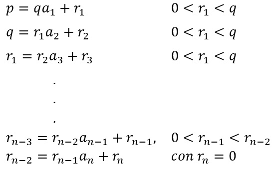

Teoremas
[1.] Teorema: Todo número racional puede expresarse como una fracción continua simple finita.
Demostración: Sea r = p⁄q un número racional con q > 0.
Se puede representar por la notación:

Como los residuos r1, r2, . . . forman una sucesión decreciente de enteros positivos menores que q, el proceso debe terminarse en un número finito de pasos con un residuo rn = 0 como se ha indicado.